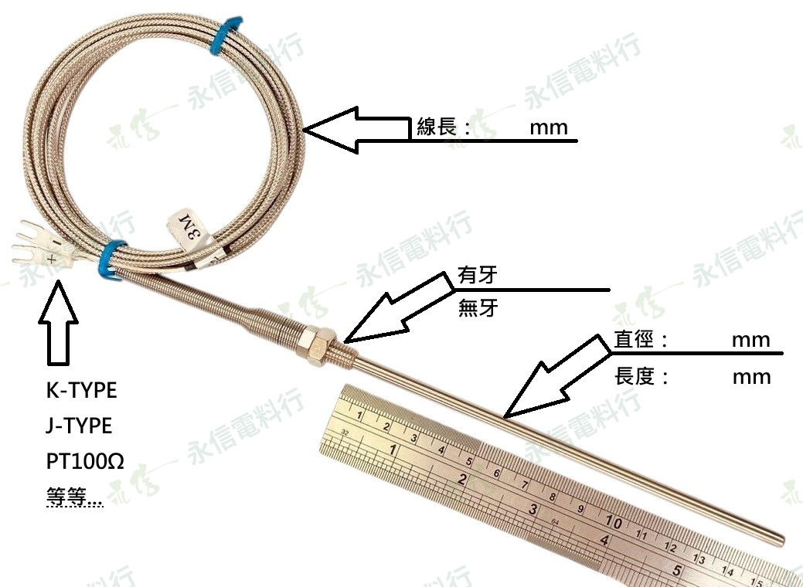

本頁僅放一張實際成品照片作為形式參考；網站版照片已套用永信電料行低透明度浮水印。
CUSTOM MADE客製溫度感測元件
CUSTOM TEMPERATURE PROBE｜客製溫度感測元件
客製感溫棒 可依需求確認規格
本頁照片為實際成品形式參考，並非固定單一規格。可依現場設備需求提供感溫種類、探棒尺寸、線長、螺牙與接線條件，由永信電料行協助整理需求並確認實際可製作組合、價格與交期。
商品型態客製品
感溫需求K／J／Pt100 等
探棒尺寸直徑／長度依需求
安裝有牙／無牙
客製品訂購提醒
本商品依雙方確認的規格安排製作／採購。訂單確認並進入製作後，除商品與確認規格不符、商品瑕疵或依法得主張之情形外，原則上不接受任意取消或退換；完成後請依約取貨／收貨，請勿無故拒收或逾期未取。下訂前請再次確認規格與數量。
客製品實際可製作組合、價格與交期，依完整需求詢價後確認。
CUSTOM SPECIFICATION
客製規格確認表
以下欄位是詢價時建議提供的資料，並不代表每一種組合均固定可製作；永信電料行會依你提供的需求協助整理，再確認實際製作條件。
感溫元件K-Type／J-Type／Pt100 等需求可提出詢問
探棒直徑請提供需求尺寸（mm）
探棒長度請提供需求尺寸（mm）
安裝方式有牙／無牙；有牙請提供牙規
線長請提供需求長度
端末／接線依設備接線需求確認；照片示意為叉型端子
使用條件請提供預估溫度範圍、測量位置／介質與現場環境
需求數量請提供預計數量
其他特殊需求可提供舊品、樣品、圖面或尺寸照片協助核對
照片僅為實際成品形式參考。感溫元件、尺寸、材質、溫度條件、配線與安裝方式仍須依實際用途確認，未確認的數值不會直接套用到訂單。
ORDER CHECKLIST
下訂前建議確認
01
感溫種類
先確認控制器／量測儀表所需輸入，例如 K、J 或 Pt100。
02
探棒尺寸
提供探棒直徑與實際插入／探棒長度。
03
安裝與線長
確認有牙／無牙、牙規與線材需求長度。
04
照片與數量
提供舊品、安裝位置照片與需求數量，方便核對。